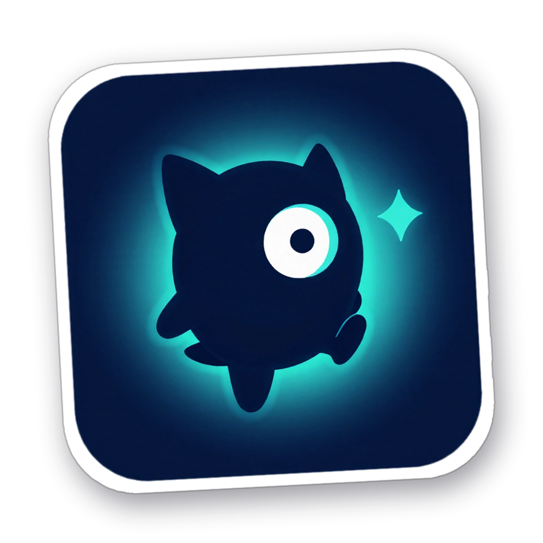

reflex
Control your Mac from Claude.
01 · intro
Asking Claude to open a folder costs a turn, tokens and a wait, for something your Mac does by itself. reflex sees those phrases while you type, shows what Enter will do, and does it on your Mac. The prompt never reaches the model.
Claude Code plugin · MIT · macOS · English and Spanish
Type → see → done
| Type | Say it your way. «turn the volume down», «open Figma», «show me the invoice», «abre brand». |
| See | One line above the prompt says what Enter will do. Nothing shows for phrases that are not actions. |
| Done | Enter runs it here, in milliseconds, with no turn and no tokens. Anything else goes to Claude as typed. |
02 · while you type
The line above the prompt
⚡ volume down > turn the volume down ⚡ open ~/Development/brand > abre brand ⚡ open pelayomendez.github.io/reflex the page Claude just showed > open the website > open brand and fix the bug no line: this one is Claude's
It takes a phrase only when the whole phrase is an action. A leading \ always sends it to Claude.
03 · what it can do
Reflexes, not reasoning
A short, closed catalogue of verbs, run as fixed argument lists, never through a shell.
04 · how it decides
Templates → small model → Claude
| Templates | Fixed phrasings, matched against the whole phrase. Free and instant. |
| Small model | reflex-core, a 270M model on your Mac, finds what you mean in free phrasing. It proposes; reflex checks every target exists before acting. |
| Claude | Everything else, and anything reflex is not sure of, goes to Claude as typed. |
Karpathy's cognitive core at the scale of one machine: a small model that knows your system rather than the world, and asks the big one when it is not sure. Claude was its teacher: it wrote the training phrases for three invented people's Macs, so the model learned the task, not anyone's names.
The bar is zero wrong actions. Passing a phrase to Claude is fine; acting wrongly is not. Every version is kept only if it scores 0 wrong on held-out exams full of traps.
insert coin
Install
/plugin install reflex --marketplace pelayomendez/reflex
Needs: macOS and Node.js 20 or newer. Templates work alone; zoxide adds the folders you visit most.
For freer phrasing, add the small model with Ollama and point ~/.config/reflex/config.toml at it:
ollama pull mfpelayo/reflex-core
# ~/.config/reflex/config.toml
[model]
url = "http://localhost:11434/v1"
name = "mfpelayo/reflex-core"
FAQ
What if it gets it wrong? It shows the line before Enter, so you see it first. When in doubt it does nothing and Claude answers.
Does anything leave my Mac? No. The phrase, the model and the action stay local.
More? Every verb, aliases, reflex teach and the design are in the README.